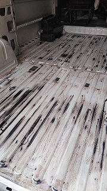
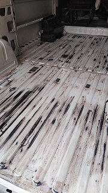

Proceso de tratamiento de oxidos
- Lijar oxidos (si es con ayuda, mejor).
- Aplicar un producto transformador del oxido y esperar a que se seque segun las indicaciones del fabricante.
- Una vez pasado el tiempo de secado, se aplican minimo dos capas de esmalte antioxidante. En este caso negro pues tiene mayor propiedad anticorrosiva.
 

Se ha cambiado las laminas metalicas que recubrian la parte de las ventanas traseras, pues estaban demasiado desgastadas, como se aprecia en la imagen a continuacion.
Resultado:
Laminas nuevas y un toque de color.
Recuerda que antes de tratar los oxidos, es recomendable realizar previamente el desmontaje y limpieza.